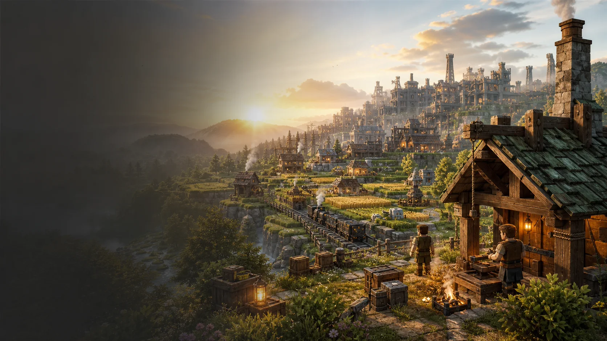
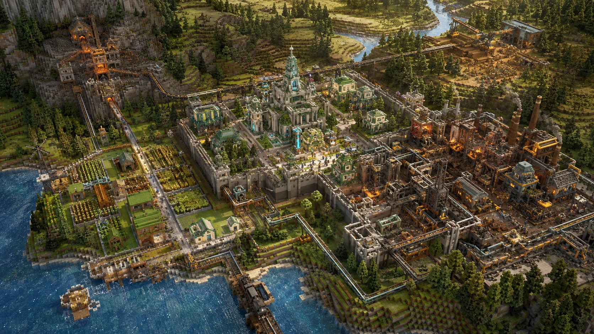
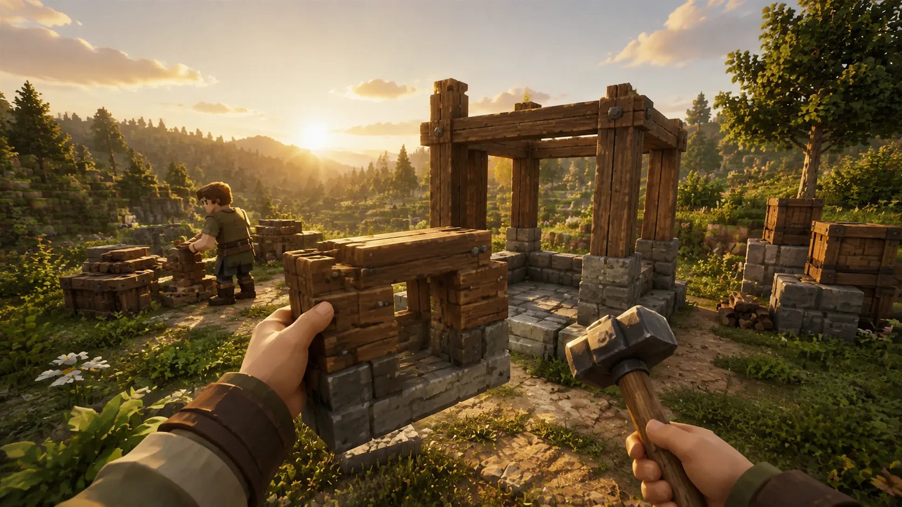
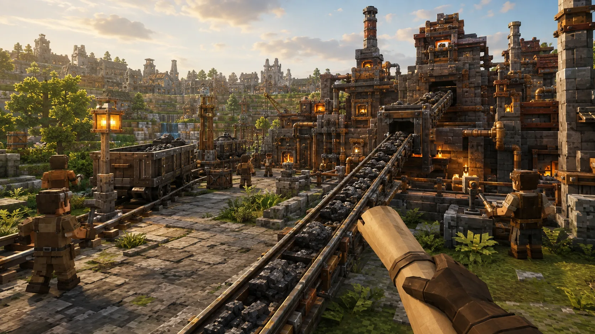
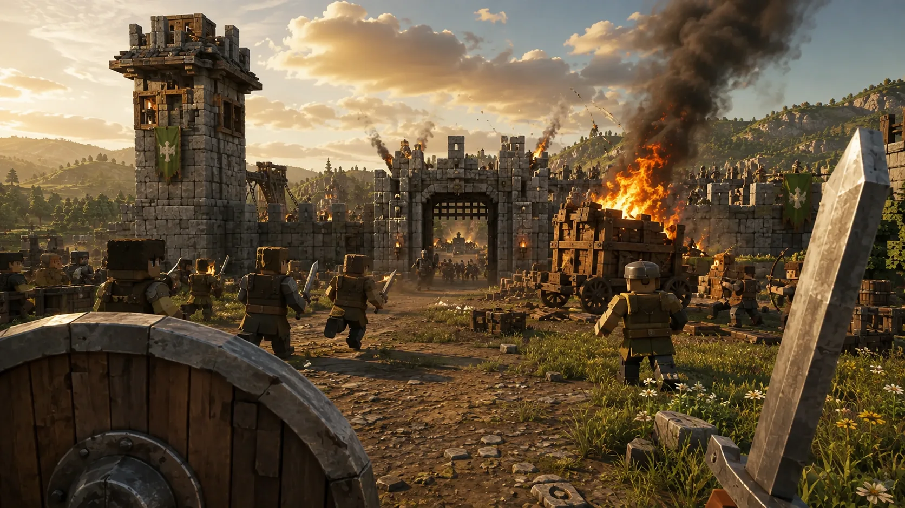
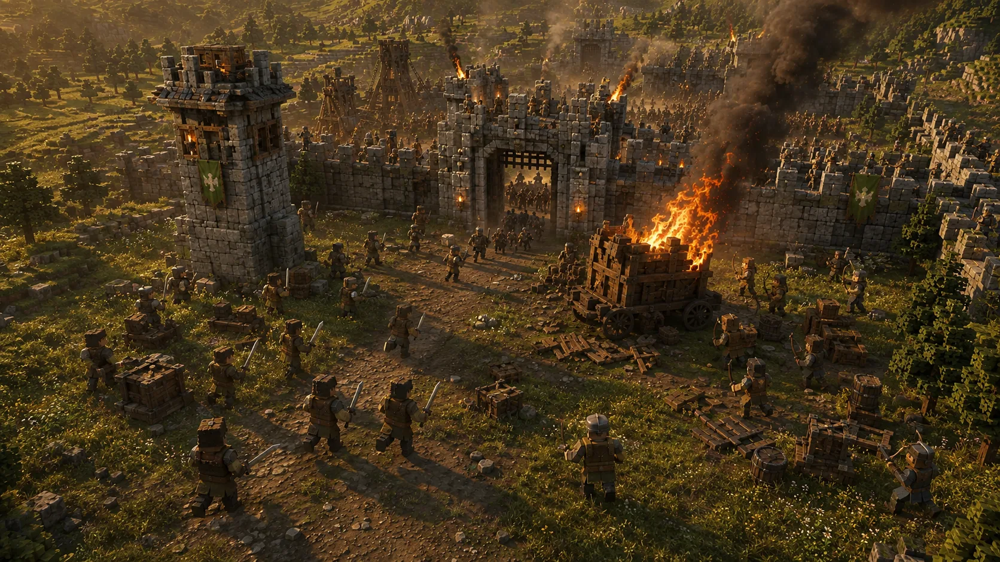
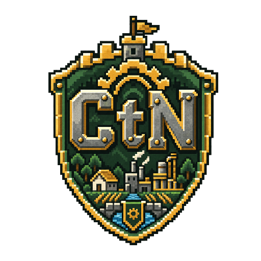

Survive · Craft · Automate · Lead
Del primer bloque a una nación viva
Comienza con un refugio en un mundo hostil y conviértelo en una nación industrial viva, construida desde cerca y dirigida desde las alturas.
Conoce la visión Quiero ayudar

De sobreviviente a líder de una nación
Craft to Nation une la supervivencia en primera persona con la planificación estratégica. Cada refugio que construyes puede convertirse en un plano; cada colono, camino y puesto de trabajo puede integrarse en una nación industrial que después diriges desde las alturas.

El viaje del jugador
- Sobrevive. Reúne recursos, fabrica herramientas y levanta tu primer refugio.
- Funda. Convierte edificios válidos en planos, atrae colonos y establece el núcleo de tu ciudad.
- Industrializa. Adapta el terreno y conecta puestos, industrias y almacenes a los recursos del mundo.
- Gobierna. Alterna entre la acción directa y la estrategia para proteger, automatizar y expandir tu nación.
Primera persona
Vive la ciudad desde dentro
Construye con tus manos, recorre las cadenas que diseñaste y lucha junto a quienes habitan tu ciudad.



Dos perspectivas
La misma batalla. Dos formas de liderar.
Dirige la defensa desde las alturas y baja al terreno cuando tu ciudad te necesite. Mueve el control para cambiar de perspectiva.

Primera persona Vista cenitalLa visión completa
Lo que hace diferente a Craft to Nation
La meta no es colocar una ciudad prefabricada, sino construir una civilización cuya forma, economía y posibilidades nazcan de lo que haces en el mundo.
- Idea distintivaConstruye y gobiernaVive tu nación en primera persona y cambia a la vista cenital para planear distritos, producción y tropas.
- Idea distintivaPlanos nacidos de tus edificiosEl juego reconoce construcciones válidas, las convierte en diseños reutilizables y las reconstruye como obras fantasma reversibles. Antes de colocarlas, la previsualización muestra bloques, despejes y adaptación del terreno.
- Idea distintivaUna economía que agota el mundoLos cuatro puestos de recolección son edificios de bloques con plantilla propia, puerta de servicio y baúl físico. Leen depósitos, bosques y agua conectada reales mientras sus trabajadores recolectan y acarrean recursos por el mundo.
- Caminos que nacen del relieveLas vías de tierra pisada atraviesan el relieve voxel con rampas y diagonales, retiran árboles cuando hace falta y aceleran un 35 % al jugador y a los colonos.
- Un subsuelo fuera del mapaTúneles y cavernas, ocultos en la vista cenital, abren rutas secretas para explorar, transportar y tender emboscadas.
- Idea distintivaColonos que habitan tus diseñosLos colonos migran a las viviendas construidas por el jugador, encuentran sus propias rutas a pie, entran a puestos remotos, abren puertas por proximidad y llevan recursos de vuelta al núcleo urbano.
- Idea distintivaUna ciudad que se puede rehacerRemodela edificios declarados sin demolerlos. Los residentes se reubican en viviendas buffer y, si faltan camas, los colonos sin techo se convierten en una crisis cívica temporal que puedes resolver antes del exilio.
- Detalle sin romper la simulaciónEl tallado cosmético divide visualmente cada bloque en una cuadrícula 3×3×3 sin alterar su unidad estructural.
- Tu nación viaja contigoNúcleos soberanos y planos transportables permiten fundar nuevas ciudades y entrar a partidas equilibradas en red local.
Visión a largo plazo
De un refugio a una nación que transforma el mundo
Estas ideas están sin PoC ni fase asignada. Describen un horizonte posible después de que funcione la experiencia central.

La rama no se elige desde un menú: los edificios, sistemas y prioridades de tu nación generan una tendencia tecnológica emergente.
Visión a muy largo plazo
Un planeta finito compartido por naciones vecinas
Un futuro servidor MMO podría ubicar varias ciudades en el mismo planeta, conectadas por carreteras, ferrocarriles y puertos. Podrían comerciar, formar alianzas, librar guerras y continuar produciendo y defendiéndose mientras sus jugadores están desconectados.

Estado del desarrollo
El prototipo jugable ya conecta supervivencia, construcción voxel libre, gestión urbana, logística física, nueve industrias, investigación descentralizada, energía y moral dinámica en una misma economía creciente.
- v3.59GDD vigente
- 562Bloques de prueba
- 28Escenas de prueba
- En progresoFase 3 · Industria
La simulación centraliza todo su balance numérico y parámetros de ejecución en ajustes.gd junto con textos de interfaz reactivos y multi-idioma (strings.gd), sentando las bases para perfiles de partida y ajuste en caliente. Integra el sistema de moral dinámica [0 a 100] con curva continua de productividad laboral, migración mensual escalonada calibrada con fuga de cerebros y boost migratorio de 2.5×, iconografía vectorial SVG completa en el HUD (catálogo de más de 90 íconos con miniaturas 3D vivas), tendido de vías por colonos, canalizaciones aéreas a desnivel en Y+6, pozos de crudo en el subsuelo con lámpara de minero, físicas de fluidos, estación de bombeo, vidriera con paneles de ventana 1/20, fábrica de bloques, taller de transporte con 6 unidades de acarreo, investigación descentralizada en 2 capas con el Investigador Itinerante, reservas porcentuales en el almacén central y progresión orgánica de eras por IDU.
Último video publicado · 14 de octubre de 2026
Devlog Recap #1: De la Choza a la Central Eléctrica
Resumen completo de la primera sesión de desarrollo en vivo de Craft to Nation. Recorre desde la llegada de los primeros colonos, la construcción de la cadena logística inicial y la zonificación, hasta la primera chispa eléctrica que da paso a la industrialización. Los avances posteriores (el modelo de moral dinámica, la fuga de cerebros, la fábrica de bloques y la iconografía vectorial completa en el HUD) no aparecen todavía en este video pero ya forman parte de la simulación activa.
Ver Devlog Recap #1 en YouTube →Momentos destacados de Devlog Recap #1
- Gestión de Almacén y RecursosGestión de existencias reales y logística de recursos en el asentamiento inicial.
- Asignación de Colonos y PuestosTrabajadores asignados dinámicamente a puestos clave de recolección.
- Zonificación y Trazado VialPlanificación de sectores urbanos y trazado de vías sobre el relieve voxel.
- Cadena de Energía y CentralGeneración eléctrica, suministro de carbón y distribución de energía por la red.
- Eras Tecnológicas: Diesel y SolarAnticipo de eras tecnológicas avanzadas y futura expansión industrial.
Abrir el índice completo de Devlog Recap #1 (5 hitos)
Historial del desarrollo
Actualización anterior · 1 de octubre de 2026
La industria cobra vida
Esta actualización comentada recorre la primera cadena industrial completa: localizar y extraer hierro, moverlo por el almacén central, contratar personal para la siderúrgica y refinar acero real. También muestra accesos numéricos, minas según profundidad, depósitos agotables y devolución de materiales.
Ver La industria cobra vida en YouTube →Abrir los momentos destacados de La industria cobra vida
- La primera siderúrgicaEl asentamiento vivo ya cuenta con su primera industria de transformación.
- Construye con accesos numéricosLas secuencias jerárquicas activan herramientas sin recorrer toda la interfaz.
- Recupera lo que construisteLa deconstrucción devuelve los materiales reales invertidos en una mina abandonada.
- Encuentra y extrae hierro realLa minería sigue depósitos expuestos y modifica físicamente el subsuelo.
- Los recursos recorren la ciudadUn acarreador lleva hierro desde el almacén central hasta la siderúrgica.
- El hierro se convierte en aceroPersonal, insumos, almacenamiento y tiempo cierran la primera cadena real de refinamiento.
Abrir el índice completo de La industria cobra vida (17 avances)
- Estado de la colonia y primera siderúrgica
- Una mina agotada detiene la producción
- Nuevos accesos directos numéricos
- Colocación de minas según profundidad y recursos
- Excavación manual para alcanzar nuevas vetas
- Deconstrucción y recuperación de materiales
- Construcción de una mina a mayor profundidad
- El terreno limita dónde se puede construir
- Búsqueda y extracción de hierro expuesto
- El hierro llega al almacén central
- La primera cadena de producción de acero
- Contratación y reasignación de trabajadores
- Acarreo de hierro hacia la siderúrgica
- Abastecimiento manual de la industria
- La siderúrgica comienza a producir acero
- Balance de producción, minería y trabajadores
- Refinamiento de recursos completamente funcional
Actualización anterior · 27 de septiembre de 2026
Un asentamiento vivo que ahora se entiende mejor
Esta actualización enfocada muestra el nuevo HUD por modos, las ventanas de población y almacén en vivo, la transición fluida entre cámaras y las notificaciones emergentes. La colocación de edificios ahora explica cada rechazo con precisión, incluidos el terreno y los despejes de puertas, ventanas y camas, mientras los trabajadores siguen recolectando, acarreando y agotando físicamente el mundo.
Ver esta actualización de desarrollo en YouTube →Abrir los momentos destacados de la actualización del 27 de septiembre
- Un HUD que responde a lo que hacesCada cámara muestra las herramientas y los datos de ciudad relevantes para su modo.
- La población se vuelve legibleUna ventana en vivo detalla camas, desempleo y cada puesto ocupado.
- Cambia de escala sin perder el contextoLa cámara ahora vuela con fluidez entre la planificación y la acción en primera persona.
- El juego explica lo que ocurrióLas notificaciones informan recursos no disponibles, rechazos, edificios terminados y nuevos colonos.
- Construcción con planos más seguraLas obras fantasma respetan el terreno y los despejes vitales de puertas, ventanas y camas.
- El trabajo deja huella en el mundoUn maderero daña y retira árboles reales, modificando la producción futura.
Abrir el índice completo de la actualización del 27 de septiembre (23 avances)
- HUD por modos y barra de ciudad en vivo
- Menú de construcción interactivo
- Puestos de mina, caza, madera y pesca
- Herramienta de vías y accesos rápidos
- Ventana de población en vivo
- Trabajadores, desempleo y ocupaciones
- Inventario del almacén y tasas de recursos
- Transición animada entre cámaras
- Recolectores y acarreadores trabajando
- Producción y transporte desde la mina
- Colonos, viviendas y puertas interactivas
- Recolección manual de frutos
- Notificaciones contextuales del HUD
- Ubicación inválida de edificio rechazada
- Validación de pendiente, frente y despejes
- Construcción asistida mediante plano
- Construcción finalizada
- Notificación de nuevo colono
- Asignación inmediata de nuevos trabajadores
- Agotamiento físico alrededor del puesto maderero
- Salud de los árboles y tala por NPC
- Transición de cámara mejorada
- Ventanas de datos en vivo simultáneas
Actualización anterior · 25 de septiembre de 2026
Un asentamiento que vive, trabaja y transforma su mundo
Esta demostración comentada recorre el ciclo jugable desde la construcción manual hasta un asentamiento en funcionamiento: llegan colonos, ocupan trabajos, producen alimentos, acarrean recursos, avanzan más rápido por vías y agotan depósitos reales. Desde esta grabación, la actualización posterior añade el HUD por modos, ventanas de datos en vivo, transiciones de cámara más fluidas y notificaciones contextuales.
Ver esta actualización de desarrollo en YouTube →Abrir los momentos destacados de la actualización del 25 de septiembre
- Los puestos leen su entornoLa previsualización estima la producción y rechaza accesos obstruidos.
- Construye la primera viviendaUna estructura se levanta a mano con los elementos necesarios para convertirse en edificio.
- Zonifica el terreno realLa influencia residencial se pinta directamente sobre el mundo voxel.
- Los planos adaptan el terrenoUna obra fantasma nivela su huella antes de construirse.
- Llegan los colonosCompletar viviendas habitables atrae a los primeros habitantes.
- Asigna trabajos realesLos colonos se convierten en recolectores y acarreadores según las necesidades.
- La producción se vuelve visibleLa comida entra al almacén local y un acarreador la lleva físicamente al núcleo.
- Las vías cambian el movimientoLas vías de tierra siguen el relieve y aceleran a los colonos.
- Una mina lee depósitos realesSu previsualización detecta tierra, piedra, carbón, cobre y hierro bajo la huella.
- Responde a la presión alimentariaUn puesto de pesca y la reasignación de trabajadores estabilizan el asentamiento.
- Extrae recursos directamenteEl avatar recolecta un árbol con el tiempo mientras la mina consume bloques reales.
- El agua cambia la productividadLa producción pesquera sube o baja al modificar el agua conectada.
Abrir el índice completo de la actualización del 25 de septiembre (41 avances)
- Mundo generado y vista general del modo de pruebas
- Interfaz, recursos, consumo de comida y ciclos de simulación
- Colocación y minado manual de bloques
- Puesto de caza y recolección con producción prevista en vivo
- Colocación obstruida rechazada y corregida al rotar
- Construcción de la primera vivienda y núcleo urbano
- Requisitos del edificio: ventana, puerta, cama, baúl y despeje
- Estructura declarada como núcleo urbano
- Zonificación residencial sobre el terreno real
- Copias reutilizables del núcleo construido por el jugador
- Obra fantasma, nivelación del terreno y construcción
- Llegan los primeros colonos al completar las viviendas
- Colonos asignados al puesto
- Comienza la producción de alimentos
- El acarreador transporta físicamente la comida al núcleo
- Crecen la capacidad residencial y el almacén central
- Vía de tierra construida sobre el relieve
- Los colonos avanzan más rápido por la vía
- Modo de colocación de mina
- Detección de tierra, piedra, carbón, cobre y hierro
- Vía extendida hasta la mina
- Trabajador asignado a la mina
- Explicación de la futura construcción por PNJ
- Nueva vivienda completada y llegada de más colonos
- Puesto de pesca colocado para aliviar la presión alimentaria
- Trabajadores reasignados a la pesca
- Recolección manual de fruta ante la emergencia
- Consecuencias del hambre para los colonos
- Puesto maderero y vía de conexión
- Extracción manual temporizada de un árbol
- La mina consume bloques subterráneos reales
- El puesto reconoce un depósito agotado
- Trabajadores visibles dentro de la mina
- Estado actual de la simulación del agua
- La productividad pesquera responde al agua conectada
- Oxígeno limitado bajo el agua
- Limitación conocida al reconocer capas de agua
- La producción pesquera cae al cortar la conexión del agua
- Resumen del ciclo jugable actual
- Siguientes pasos: arte diferenciado y más materiales de construcción
- Cierre e invitación a compartir sugerencias
Demostración del prototipo · 11 de septiembre de 2026
De un refugio hecho a mano a un pequeño asentamiento productivo
Esta demostración sin cortes muestra construcción en primera persona, validación estructural, planificación cenital, planos reutilizables, adaptación del terreno y puestos de recursos. Los avances posteriores no aparecen todavía en este video: colonos con navegación propia, puestos productivos y acarreo físico, agotamiento real de recursos, extracción manual con tiempo y vías de tierra pisada.
Ver la demostración completa en YouTube →Abrir los momentos destacados del video histórico
- Un mundo voxel vivoTerreno procedural, agua y bosques recorridos en primera persona.
- Constrúyelo tú mismoConstrucción libre bloque a bloque con pisos, paredes, mobiliario, puertas y ventanas.
- El juego entiende tu edificioEl refugio se valida, se guarda como plano reutilizable y se convierte en núcleo urbano.
- Cambia de escalaEl mismo mundo pasa de primera persona a una vista estratégica cenital.
- Zonifica el terreno realLas áreas urbanas se pintan directamente sobre el relieve voxel.
- Reutiliza lo que diseñasteLa casa construida a mano se convierte en un plano colocable desde las alturas.
- Construcción fantasmaLos planos aparecen como obras que se completan suministrando materiales.
- Construcción reversibleUn edificio puede desmontarse siguiendo el orden inverso de construcción.
- El asentamiento respondeUna nueva vivienda aumenta las camas y amplía la influencia urbana.
- Los puestos leen el mundoUna mina anticipa depósitos reales, personal, almacenamiento y producción.
- El terreno se adaptaLa mina nivela su huella real antes de ser colocada.
- El agua forma parte de las reglasUna huella acuática inválida se rechaza; una anclada drena y rellena el terreno.
Abrir el índice completo de timestamps (34 avances)
- Mundo voxel procedural y exploración en primera persona
- Minado directo del terreno
- Cimientos y pisos colocados a mano
- Colocación de cama de dos celdas
- Cama y baúl dentro de la vivienda
- Colocación de puerta de dos celdas
- Colocación de ventanas
- Cerramiento estructural completado
- Validación, plano reutilizable y núcleo urbano
- Cambio a la cámara cenital
- Zonificación sobre el relieve real
- Diferentes categorías de zona
- Modo de colocación de planos reutilizables
- Colocación inválida rechazada por la zona
- Previsualización de colocación válida
- Dos construcciones fantasma creadas
- Modo de deconstrucción
- Eliminación completa del edificio
- Suministro manual de materiales de construcción
- Segunda vivienda completada e influencia ampliada
- Tercera vivienda colocada estratégicamente
- Suministro de la tercera construcción
- Tercera vivienda completa y previsualización de mina
- Producción minera recalculada desde depósitos reales
- La mina nivela el terreno y se coloca
- Previsualización de caza y recolección
- Puesto de caza y recolección colocado
- Huella acuática rechazada, drenada y rellenada
- Regreso al bosque en primera persona
- Interacción directa con un árbol procedural
- Regreso a la planificación estratégica
- Puesto rechazado por colisión con madera
- Puesto válido de caza y recolección colocado
- Vista final del asentamiento en primera persona
Hoja de ruta técnica
- Fase 0 · Lógica pura
- Completado. Recursos, demografía, niveles urbanos, planos de construcción y zonificación forman una base comprobable fuera de la escena 3D.
- Fase 1 · Construcción en primera persona
- Verificado. Ya es posible caminar, minar, colocar bloques y objetos de varias celdas, interactuar con puertas y baúles y validar edificios personalizados por su volumen interno. Se reconocen habitaciones irregulares y de varios pisos, mientras el pathfinding real comprueba sus accesos.
- Fase 2 · Ciudad, interfaz y zonificación
- Completado. El estado de la ciudad, la zonificación, la migración y la navegación de colonos funcionan junto con un HUD por modos. La barra superior responsiva, el almacén alfabético, las ocupaciones agrupadas, los iconos SVG de control, las fichas de herramienta en vivo y la transición animada mantienen legible la simulación en distintas resoluciones.
- Fase 3 · Mundo procedural y recursos
- En progreso. El mundo finito, la recolección física, las vías de tierra, el acarreo con prioridades, ocho industrias (incluyendo Vidriera), fábrica de bloques, Taller de Transporte con unidades móviles, moral dinámica con éxodo demográfico, indicador IDU I–IV y evolución de Eras, iconografía vectorial completa en el HUD, arquitectura centralizada de balance (ajustes.gd) con textos reactivos multi-idioma (strings.gd), escuelas de especialistas, investigación descentralizada en dos capas con Investigador Itinerante, la red aérea de canalizaciones, pozos de crudo en el subsuelo, físicas de fluidos, estación de bombeo y el modal interactivo de energía ya son completamente funcionales. Cuadrillas de colonos tienden vías con prioridades configurables, mientras la remodelación, los buffers de inmigración, la reubicación y el estado temporal sin techo vuelven adaptable a la propia ciudad. Solo restan el consumo universal de energía de Era 3 y el balance final.
- Fase 4 · Cámara dual y tropas
- Planeado. Cambio fluido entre perspectivas, selección de unidades y órdenes desde la vista estratégica.
- Fase 5 · Logística y movimiento
- Planeado. La navegación A* a pie y el primer nivel de vías de tierra pisada se adelantaron. Quedan la ponderación por carreteras, trenes, cintas transportadoras, tuberías y puentes.
- Fase 6 · Combate, inteligencia y subsuelo
- Planeado. Asedios, sucesión del avatar, enemigos y uso táctico de túneles y cavernas.
- Fase 7 · Multijugador en red local
- Planeado. Estado compartido, núcleos soberanos portátiles y planos reutilizables entre partidas equilibradas.
Directos
Sesiones en vivo
Acompaña las transmisiones de desarrollo en directo y pruebas en tiempo real directamente en YouTube.
 Directo en YouTube
Directo en YouTube
Desarrollo en vivo en YouTube
Accede a las emisiones en directo a medida que se crean nuevas mecánicas, sistemas y pruebas de juego.
Ver transmisiones en vivoFormas de ayudar
